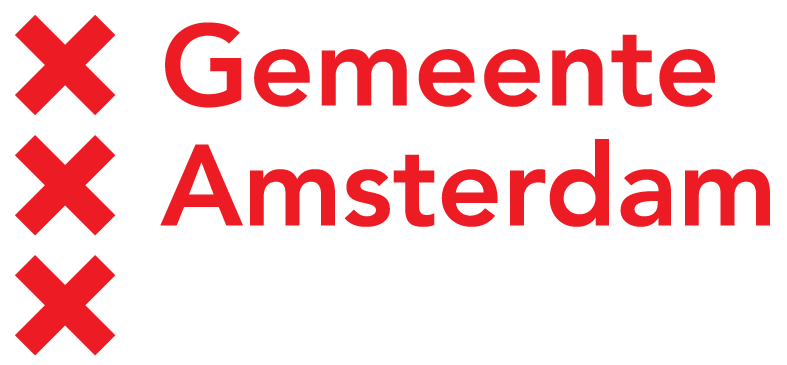

Introduction
Welcome to my
Website
Portfolio
Curriculum Vitae
I am a Freelance Interaction Designer from Amsterdam. This website should give you an impression of what I have to offer as Interaction Designer.
Services
I do
Interaction Design
Usability Tests
Front-End Development
As an Interaction Designer I do not limit myself to creating wireframes. HTML, CSS, Javascript and the Adobe CS are part of my main tools.
Method
I work Iterative
My method is dependent on the assignment. At the start of each assignment I compose an action plan.
In general I use an iterative design process.

Clients
|  | ||
|
|
||